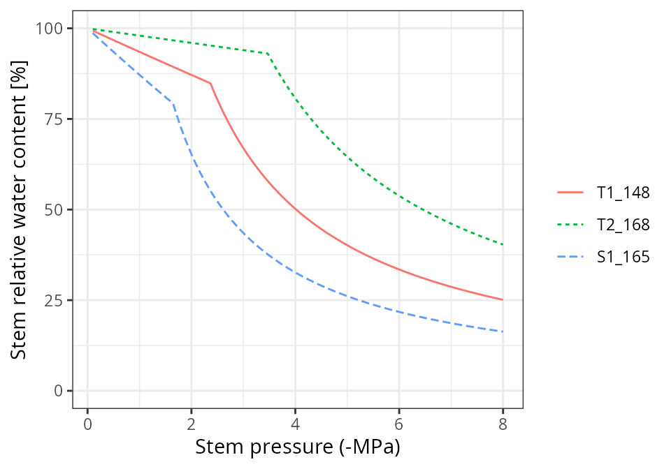
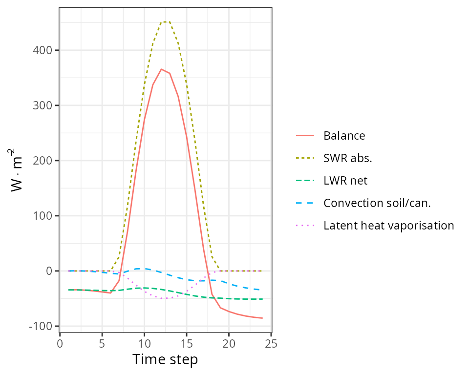
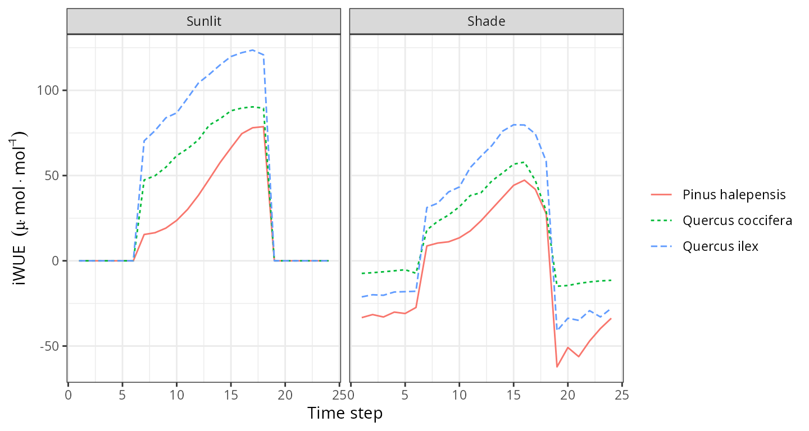

Advanced water and energy balance
Miquel De Caceres
2025-12-03
Source:vignettes/runmodels/AdvancedWaterEnergyBalance.Rmd
AdvancedWaterEnergyBalance.RmdAbout this vignette
This document describes how to run a water and energy balance model that uses a more detailed approach for hydraulics and stomatal regulation described in De Cáceres et al. (2021) and Ruffault et al. (2022). We recommend reading vignette Basic water balance before this one for a more accessible introduction to soil water balance modelling. This vignette is meant to teach users to run the simulation model within R. All the details of the model design and formulation can be found at the medfatebook.
Preparing model inputs
Model inputs are explained in greater detail in vignettes Understanding
model inputs and Preparing
model inputs. Here we only review the different steps required
to run function spwb().
Soil, vegetation, meteorology and species data
Soil information needs to be entered as a data frame
with soil layers in rows and physical attributes in columns. Soil
physical attributes can be initialized to default values, for a given
number of layers, using function defaultSoilParams():
examplesoil <- defaultSoilParams(4)
examplesoil## widths clay sand om nitrogen bd rfc
## 1 300 25 25 NA NA 1.5 25
## 2 700 25 25 NA NA 1.5 45
## 3 1000 25 25 NA NA 1.5 75
## 4 2000 25 25 NA NA 1.5 95As explained in the package overview, models included in
medfate were primarily designed to be ran on forest
inventory plots. Here we use the example object provided with
the package:
data(exampleforest)
exampleforest## $treeData
## Species DBH Height N Z50 Z95
## 1 Pinus halepensis 37.55 800 168 100 300
## 2 Quercus ilex 14.60 660 384 300 1000
##
## $shrubData
## Species Height Cover Z50 Z95
## 1 Quercus coccifera 80 3.75 200 1000
##
## attr(,"class")
## [1] "forest" "list"Importantly, a data frame with daily weather for the period to be simulated is required. Here we use the default data frame included with the package:
## dates MinTemperature MaxTemperature Precipitation MinRelativeHumidity
## 1 2001-01-01 -0.5934215 6.287950 4.869109 65.15411
## 2 2001-01-02 -2.3662458 4.569737 2.498292 57.43761
## 3 2001-01-03 -3.8541036 2.661951 0.000000 58.77432
## 4 2001-01-04 -1.8744860 3.097705 5.796973 66.84256
## 5 2001-01-05 0.3288287 7.551532 1.884401 62.97656
## 6 2001-01-06 0.5461322 7.186784 13.359801 74.25754
## MaxRelativeHumidity Radiation WindSpeed
## 1 100.00000 12.89251 2.000000
## 2 94.71780 13.03079 7.662544
## 3 94.66823 16.90722 2.000000
## 4 95.80950 11.07275 2.000000
## 5 100.00000 13.45205 7.581347
## 6 100.00000 12.84841 6.570501Finally, simulations in medfate require a data frame
with species parameter values, which we load using defaults for
Catalonia (NE Spain):
data("SpParamsMED")Simulation control
Apart from data inputs, the behaviour of simulation models is
controlled using a set of global parameters. The default
parameterization is obtained using function
defaultControl():
control <- defaultControl("Sperry")To use the advanced water balance model we must change the values of
transpirationMode to switch from "Granier" to
either "Sperry" or "Sureau".
Since we will be inspecting subdaily results, we need to set the flag to obtain subdaily output:
control$subdailyResults <- TRUEWater balance input object
A last object is needed before calling simulation functions, called
spwbInput. It consists in the compilation of aboveground,
belowground parameters and the specification of additional parameter
values for each plant cohort. This is done by calling function
spwbInput():
x <- spwbInput(exampleforest, examplesoil, SpParamsMED, control)The spwbInput object for advanced water and energy
balance is similar to that of simple water balance simulations, but
contains more elements. Information about the cohort species is found in
element cohorts, i.e. the cohort code, the species index
and species name:
x$cohorts## SP Name
## T1_148 148 Pinus halepensis
## T2_168 168 Quercus ilex
## S1_165 165 Quercus cocciferaElement soil contains soil layer parameters and state
variables (moisture and temperature):
x$soil## widths sand clay usda om nitrogen bd rfc macro Ksat VG_alpha
## 1 300 25 25 Silt loam NA NA 1.5 25 0.0485 5401.471 89.16112
## 2 700 25 25 Silt loam NA NA 1.5 45 0.0485 5401.471 89.16112
## 3 1000 25 25 Silt loam NA NA 1.5 75 0.0485 5401.471 89.16112
## 4 2000 25 25 Silt loam NA NA 1.5 95 0.0485 5401.471 89.16112
## VG_n VG_theta_res VG_theta_sat W Temp
## 1 1.303861 0.041 0.423715 1 NA
## 2 1.303861 0.041 0.423715 1 NA
## 3 1.303861 0.041 0.423715 1 NA
## 4 1.303861 0.041 0.423715 1 NAAs an aside, the columns in x$soil that were not present
in the input data frame examplesoil are created by an
internal call to a soil initialization function called
soil().
Element canopy contains state variables within the
canopy:
x$canopy## zlow zmid zup LAIlive LAIexpanded LAIdead Tair Cair VPair
## 1 0 50 100 NA NA NA NA NA NA
## 2 100 150 200 NA NA NA NA NA NA
## 3 200 250 300 NA NA NA NA NA NA
## 4 300 350 400 NA NA NA NA NA NA
## 5 400 450 500 NA NA NA NA NA NA
## 6 500 550 600 NA NA NA NA NA NA
## 7 600 650 700 NA NA NA NA NA NA
## 8 700 750 800 NA NA NA NA NA NA
## 9 800 850 900 NA NA NA NA NA NA
## 10 900 950 1000 NA NA NA NA NA NA
## 11 1000 1050 1100 NA NA NA NA NA NA
## 12 1100 1150 1200 NA NA NA NA NA NA
## 13 1200 1250 1300 NA NA NA NA NA NA
## 14 1300 1350 1400 NA NA NA NA NA NA
## 15 1400 1450 1500 NA NA NA NA NA NA
## 16 1500 1550 1600 NA NA NA NA NA NA
## 17 1600 1650 1700 NA NA NA NA NA NA
## 18 1700 1750 1800 NA NA NA NA NA NA
## 19 1800 1850 1900 NA NA NA NA NA NA
## 20 1900 1950 2000 NA NA NA NA NA NA
## 21 2000 2050 2100 NA NA NA NA NA NA
## 22 2100 2150 2200 NA NA NA NA NA NA
## 23 2200 2250 2300 NA NA NA NA NA NA
## 24 2300 2350 2400 NA NA NA NA NA NA
## 25 2400 2450 2500 NA NA NA NA NA NA
## 26 2500 2550 2600 NA NA NA NA NA NA
## 27 2600 2650 2700 NA NA NA NA NA NA
## 28 2700 2750 2800 NA NA NA NA NA NACanopy temperature, water vapour pressure and
concentration are state variables needed for canopy energy balance. If
the canopy energy balance assumes a single canopy layer, the same values
will be assumed through the canopy. Variation of within-canopy state
variables is modelled if a multi-canopy energy balance is used (see
control parameter multiLayerBalance).
As you may already known, element above contains the
aboveground structure data that we already know:
x$above## H CR LAI_live LAI_expanded LAI_dead Age ObsID
## T1_148 800 0.6605196 0.84874773 0.84874773 0 NA <NA>
## T2_168 660 0.6055642 0.70557382 0.70557382 0 NA <NA>
## S1_165 80 0.8032817 0.03062604 0.03062604 0 NA <NA>Belowground parameters can be seen in below:
x$below## Z50 Z95 Z100
## T1_148 100 300 NA
## T2_168 300 1000 NA
## S1_165 200 1000 NAand in belowLayers:
x$belowLayers## $V
## 1 2 3 4
## T1_148 0.9498377 0.04811006 0.001774047 0.0002781442
## T2_168 0.5008953 0.45059411 0.040648313 0.0078622840
## S1_165 0.6799879 0.27379114 0.035676316 0.0105446776
##
## $L
## 1 2 3 4
## T1_148 2086.448 1307.358 2073.244 4045.856
## T2_168 1817.571 2100.346 2410.127 4285.194
## S1_165 1085.030 1380.808 2170.587 4146.637
##
## $VGrhizo_kmax
## 1 2 3 4
## T1_148 12670486 641770.5 23665.14 3710.341
## T2_168 36121247 32493859.1 2931286.80 566975.780
## S1_165 10941459 4405482.2 574055.73 169670.901
##
## $VCroot_kmax
## 1 2 3 4
## T1_148 2.889971 0.2336108 0.005432084 0.0004364266
## T2_168 1.568929 1.2213562 0.096017469 0.0104454169
## S1_165 2.407779 0.7618041 0.063148057 0.0097699999
##
## $Wpool
## 1 2 3 4
## T1_148 1 1 1 1
## T2_168 1 1 1 1
## S1_165 1 1 1 1
##
## $RhizoPsi
## 1 2 3 4
## T1_148 -0.033 -0.033 -0.033 -0.033
## T2_168 -0.033 -0.033 -0.033 -0.033
## S1_165 -0.033 -0.033 -0.033 -0.033The spwbInputobject also includes cohort parameter
values for several kinds of traits. For example, plant anatomy
parameters are described in paramsAnatomy:
x$paramsAnatomy## Hmed Al2As SLA LeafWidth LeafDensity WoodDensity FineRootDensity
## T1_148 850 1317.523 5.140523 0.1384772 0.2982842 0.6077016 0.2982842
## T2_168 500 3908.823 6.340000 1.7674359 0.4893392 0.9008264 0.4893392
## S1_165 80 4189.325 4.980084 1.3761085 0.3709679 0.4389106 0.3709679
## conduit2sapwood SRL RLD r635
## T1_148 0.9236406 3172.572 10 1.964226
## T2_168 0.6238125 4398.812 10 1.805872
## S1_165 0.6238125 4398.812 10 2.289452Parameters related to plant transpiration and photosynthesis can be
seen in paramsTranspiration:
x$paramsTranspiration## Gswmin Gswmax Vmax298 Jmax298 Kmax_stemxylem Kmax_rootxylem
## T1_148 0.003086667 0.2850000 72.19617 124.1687 0.15 0.60
## T2_168 0.004473333 0.2007222 68.51600 118.7863 0.40 1.60
## S1_165 0.010455247 0.2830167 62.78100 118.4486 0.29 1.16
## VCleaf_kmax VCleafapo_kmax VCleaf_slope VCleaf_P50 VCleaf_c VCleaf_d
## T1_148 4.000000 8.00000 133.86620 -2.303772 11.137050 -2.380849
## T2_168 4.000000 8.00000 19.14428 -1.964085 1.339370 -2.582279
## S1_165 9.579077 19.15815 25.47382 -2.663333 2.254991 -3.133381
## kleaf_symp VCstem_kmax VCstem_slope VCstem_P50 VCstem_c VCstem_d
## T1_148 8.00000 1.339563 68.30291 -5.139633 12.709999 -5.290000
## T2_168 8.00000 1.620936 14.60786 -6.964747 3.560000 -7.720000
## S1_165 19.15815 4.599269 12.31134 -6.980000 3.095442 -7.857378
## VCroot_kmax VCroot_slope VCroot_P50 VCroot_c VCroot_d VGrhizo_kmax
## T1_148 3.129450 103.96607 -2.966325 11.137050 -3.065569 13339632
## T2_168 2.896748 22.32794 -1.684034 1.339370 -2.214081 72113368
## S1_165 3.242501 31.37100 -1.173000 1.402489 -1.523324 16090667
## Plant_kmax FR_leaf FR_stem FR_root
## T1_148 0.7598454 0.1899614 0.5672339 0.2428047
## T2_168 0.8249857 0.2062464 0.5089563 0.2847972
## S1_165 1.5867376 0.1656462 0.3449978 0.4893561Parameters related to pressure-volume curves and water storage
capacity of leaf and stem organs are in
paramsWaterStorage:
x$paramsWaterStorage## maxFMC maxMCleaf maxMCstem LeafPI0 LeafEPS LeafAF Vleaf
## T1_148 126.03063 151.9063 99.19498 -1.591429 8.918571 0.3525 0.5258525
## T2_168 93.15304 131.4346 45.64970 -1.483333 19.260000 0.1700 0.2199087
## S1_165 96.53441 47.3984 134.64052 -2.370000 17.230000 0.2400 0.4108968
## StemPI0 StemEPS StemAF Vsapwood
## T1_148 -2.008039 13.256355 0.9236406 6.099723
## T2_168 -3.227438 46.420610 0.6238125 1.260913
## S1_165 -1.305868 6.297155 0.6238125 1.036819Finally, remember that one can play with plant-specific parameters for soil water balance (instead of using species-level values) by modifying manually the parameter values in this object.
Static analysis of sub-models
Before using the advanced water and energy balance model, is
important to understand the parameters that influence the different
sub-models. Package medfate provides low-level functions
corresponding to sub-models (light extinction, hydraulics,
transpiration, photosynthesis…). In addition, there are several
high-level plotting functions that allow examining several aspects of
these processes.
Vulnerability curves
Given a spwbInput object, we can use function
hydraulics_vulnerabilityCurvePlot() to inspect
vulnerability curves (i.e. how hydraulic conductance of
a given segment changes with the water potential) for each plant cohort
and each of the different segments of the soil-plant hydraulic network:
rhizosphere, roots, stems and leaves:
hydraulics_vulnerabilityCurvePlot(x, type="leaf")
hydraulics_vulnerabilityCurvePlot(x, type="stem")
hydraulics_vulnerabilityCurvePlot(x, type="root")
hydraulics_vulnerabilityCurvePlot(x, examplesoil, type="rhizo")
The maximum values and shape of vulnerability curves for leaves and
stems are regulated by parameters in paramsTranspiration.
Roots have vulnerability curve parameters in the same data frame, but
maximum conductance values need to be specified for each soil layer and
are given in belowLayers$VCroot_kmax. Note that the last
call to hydraulics_vulnerabilityCurvePlot() includes a
soil object. This is because the van Genuchten parameters
that define the shape of the vulnerability curve for the rhizosphere are
stored in this object. Maximum conductance values in the rhizosphere are
given in belowLayers$VGrhizo_kmax.
Supply functions
The vulnerability curves conforming the hydraulic network are used in
the model to build the supply function, which relates
water flow (i.e. transpiration) with the drop of water potential along
the whole hydraulic pathway. The supply function contains not only these
two variables, but also the water potential of intermediate nodes in the
the hydraulic network. Function
hydraulics_supplyFunctionPlot() can be used to inspect any
of this variables:
hydraulics_supplyFunctionPlot(x, type="E")
hydraulics_supplyFunctionPlot(x, type="ERhizo")
hydraulics_supplyFunctionPlot(x, type="dEdP")
hydraulics_supplyFunctionPlot(x, type="StemPsi")
Calls to hydraulics_supplyFunctionPlot() always need
both a spwbInput object and a soil object. The
soil moisture state (i.e. its water potential) is the starting point for
the calculation of the supply function, so different curves will be
obtained for different values of soil moisture.
Stomatal regulation and photosynthesis
The soil water balance model determines stomatal conductance and
transpiration separately for sunlit and shade leaves. Stomatal
conductance is determined after building a photosynthesis function
corresponding to the supply function and finding the value of stomatal
conductance that maximizes carbon revenue while avoiding hydraulic
damage (a profit-maximization approach). Given a meteorological and soil
inputs and a chosen day and timestep, function
transp_stomatalRegulationPlot() allows displaying the
supply and photosynthesis curves for sunlit and shade leaves, along with
an indication of the values corresponding to the chosen stomatal
aperture:
d <- 100
transp_stomatalRegulationPlot(x, examplemeteo, day = d, timestep=12,
latitude = 41.82592, elevation = 100, type="E")## Package 'meteoland' [ver. 2.2.4]
transp_stomatalRegulationPlot(x, examplemeteo, day = d, timestep=12,
latitude = 41.82592, elevation = 100, type="An")
transp_stomatalRegulationPlot(x, examplemeteo, day = d, timestep=12,
latitude = 41.82592, elevation = 100, type="Gsw")
transp_stomatalRegulationPlot(x, examplemeteo, day = d, timestep=12,
latitude = 41.82592, elevation = 100, type="T")
transp_stomatalRegulationPlot(x, examplemeteo, day = d, timestep=12,
latitude = 41.82592, elevation = 100, type="VPD")
Pressure volume curves
moisture_pressureVolumeCurvePlot(x, segment="leaf", fraction="symplastic")
moisture_pressureVolumeCurvePlot(x, segment="leaf", fraction="apoplastic")
moisture_pressureVolumeCurvePlot(x, segment="stem", fraction="symplastic")
moisture_pressureVolumeCurvePlot(x, segment="stem", fraction="apoplastic")
Water balance for a single day
Running the model
Soil water balance simulations will normally span periods of several
months or years, but since the model operates at a daily and subdaily
temporal scales, it is possible to perform soil water balance for one
day only. This is done using function spwb_day(). In the
following code we select the same day as before from the meteorological
input data and perform soil water balance for that day only:
date <- examplemeteo$dates[d]
meteovec <- unlist(examplemeteo[d,])
sd1<-spwb_day(x, date, meteovec,
latitude = 41.82592, elevation = 100, slope= 0, aspect = 0)The output of spwb_day() is a list with several
elements:
names(sd1)## [1] "cohorts" "topography" "weather"
## [4] "WaterBalance" "EnergyBalance" "Soil"
## [7] "Stand" "Plants" "SunlitLeaves"
## [10] "ShadeLeaves" "RhizoPsi" "ExtractionInst"
## [13] "PlantsInst" "RadiationInputInst" "SunlitLeavesInst"
## [16] "ShadeLeavesInst" "LightExtinction" "LWRExtinction"
## [19] "CanopyTurbulence"Water balance output
Element WaterBalance contains the soil water balance
flows of the day (precipitation, infiltration, transpiration, …)
sd1$WaterBalance## PET Rain Snow
## 3.9023342 0.0000000 0.0000000
## NetRain Snowmelt Runon
## 0.0000000 0.0000000 0.0000000
## Infiltration InfiltrationExcess SaturationExcess
## 0.0000000 0.0000000 0.0000000
## Runoff DeepDrainage CapillarityRise
## 0.0000000 0.0000000 0.0000000
## SoilEvaporation HerbTranspiration PlantExtraction
## 0.5000000 0.0000000 0.6912918
## Transpiration HydraulicRedistribution
## 0.6912918 0.0000000And Soil contains water evaporated from each soil layer,
water transpired from each soil layer and the final soil water
potential:
sd1$Soil## Psi HerbTranspiration HydraulicInput HydraulicOutput PlantExtraction
## 1 -0.03549110 0 0 0.5473275509 0.5473275509
## 2 -0.03318049 0 0 0.1342985054 0.1342985054
## 3 -0.03301802 0 0 0.0087260645 0.0087260645
## 4 -0.03300485 0 0 0.0009396698 0.0009396698Soil and canopy energy balance
Element EnergyBalance contains subdaily variation in
atmosphere, canopy and soil temperatures, as well as canopy and soil
energy balance components.
names(sd1$EnergyBalance)## [1] "Temperature" "SoilTemperature" "CanopyEnergyBalance"
## [4] "SoilEnergyBalance" "TemperatureLayers" "VaporPressureLayers"Package medfate provides a plot function
for objects of class spwb_day that can be used to inspect
the results of the simulation. We use this function to display subdaily
dynamics in plant, soil and canopy variables. For example, we can use it
to display temperature variations (only the temperature of the topmost
soil layer is drawn):
plot(sd1, type = "Temperature")
plot(sd1, type = "CanopyEnergyBalance")
plot(sd1, type = "SoilEnergyBalance")
Plant output
Element Plants contains output values by plant cohort.
Several output variables can be inspected in this element.
sd1$Plants## LAI LAIlive FPAR Extraction Transpiration
## T1_148 0.84874773 0.84874773 92.18285 0.44629818 0.44629818
## T2_168 0.70557382 0.70557382 72.36365 0.23260708 0.23260708
## S1_165 0.03062604 0.03062604 44.32407 0.01238653 0.01238653
## GrossPhotosynthesis NetPhotosynthesis RootPsi StemPsi LeafPLC
## T1_148 2.13341772 2.02064702 -0.3982251 -1.2513865 0
## T2_168 1.74638017 1.63904158 -0.3353606 -0.8559196 0
## S1_165 0.06670756 0.06281159 -0.3759137 -0.6029081 0
## StemPLC LeafPsiMin LeafPsiMax dEdP DDS StemRWC
## T1_148 5.371076e-09 -1.5379962 -0.03981994 0.5123977 0.001584209 0.9971956
## T2_168 2.190611e-04 -1.1346709 -0.04019180 0.5262642 0.055532585 0.9973054
## S1_165 1.941646e-04 -0.7151737 -0.04188680 1.0418297 0.027877097 0.9880834
## LeafRWC LFMC WaterBalance
## T1_148 0.9582970 122.66891 -1.029992e-17
## T2_168 0.9826572 91.83591 1.059808e-17
## S1_165 0.9891112 95.40533 1.162129e-18While Plants contains one value per cohort and variable
that summarizes the whole simulated day, information by disaggregated by
time step can be accessed in PlantsInst. Moreover, we can
use function plot.spwb_day() to draw plots of sub-daily
variation per species of plant transpiration per ground area
(L·m),
transpiration per leaf area (also in
L·m),
plant net photosynthesis (in g
C·m),
and plant water potential (in MPa):
plot(sd1, type = "PlantTranspiration", bySpecies = T)
plot(sd1, type = "TranspirationPerLeaf", bySpecies = T)
plot(sd1, type = "NetPhotosynthesis", bySpecies = T)
plot(sd1, type = "LeafPsiAverage", bySpecies = T)
Output for sunlit and shade leaves
The model distinguishes between sunlit and shade leaves for stomatal regulation. Static properties of sunlit and shade leaves, for each cohort, can be accessed via:
sd1$SunlitLeaves## LeafPsiMin LeafPsiMax GSWMin GSWMax TempMin TempMax
## T1_148 -1.638418 -0.03981994 0.002242621 0.27861927 1.274602 12.17238
## T2_168 -1.593485 -0.04199022 0.003269028 0.07398477 1.272483 17.46592
## S1_165 -1.122060 -0.04703362 0.007561239 0.09776418 1.267959 17.19247
sd1$ShadeLeaves## LeafPsiMin LeafPsiMax GSWMin GSWMax TempMin TempMax
## T1_148 -1.4377825 -0.03981994 0.002249184 0.28256129 0.9439087 10.32464
## T2_168 -0.7791464 -0.04019180 0.003253667 0.08227807 0.5424548 10.40941
## S1_165 -0.5152537 -0.04188680 0.007596148 0.10688754 0.6786286 10.19045Instantaneous values are also stored for sunlit and shade leaves. We
can also use the plot function for objects of class
spwb_day to draw instantaneous variations in temperature
for sunlit and shade leaves:
plot(sd1, type = "LeafTemperature", bySpecies=TRUE)
Note that sunlit leaves of some species reach temperatures higher than the canopy. We can also plot variations in instantaneous gross and net photosynthesis rates:
plot(sd1, type = "LeafGrossPhotosynthesis", bySpecies=TRUE)
plot(sd1, type = "LeafNetPhotosynthesis", bySpecies=TRUE)
Or variations in stomatal conductance:
plot(sd1, type = "LeafStomatalConductance", bySpecies=TRUE)
Or variations in vapour pressure deficit:
plot(sd1, type = "LeafVPD", bySpecies=TRUE)
Or variations in leaf water potential:
plot(sd1, type = "LeafPsi", bySpecies=TRUE)
plot(sd1, type = "LeafCi", bySpecies=TRUE)
plot(sd1, type = "LeafIntrinsicWUE", bySpecies=TRUE)
Water balance for multiple days
Running the model
Users will often use function spwb() to run the soil
water balance model for several days. This function requires the
spwbInput object, the soil object and the
meteorological data frame. However, running spwb_day()
modified the input objects. In particular, the soil moisture at the end
of the simulation was:
x$soil$W## [1] 0.9846374 0.9988487 0.9998848 0.9999690And the temperature of soil layers:
x$soil$Temp## [1] 8.100871 3.161176 2.383653 2.363290We can also see the current state of canopy variables:
x$canopy## zlow zmid zup LAIlive LAIexpanded LAIdead Tair Cair VPair
## 1 0 50 100 0.03062604 0.03062604 0 5.692636 386 0.5170718
## 2 100 150 200 0.00000000 0.00000000 0 5.692636 386 0.5170718
## 3 200 250 300 0.06200693 0.06200693 0 5.692636 386 0.5170718
## 4 300 350 400 0.29933459 0.29933459 0 5.692636 386 0.5170718
## 5 400 450 500 0.43266592 0.43266592 0 5.692636 386 0.5170718
## 6 500 550 600 0.41005056 0.41005056 0 5.692636 386 0.5170718
## 7 600 650 700 0.24368578 0.24368578 0 5.692636 386 0.5170718
## 8 700 750 800 0.10657777 0.10657777 0 5.692636 386 0.5170718
## 9 800 850 900 0.00000000 0.00000000 0 5.692636 386 0.5170718
## 10 900 950 1000 0.00000000 0.00000000 0 5.692636 386 0.5170718
## 11 1000 1050 1100 0.00000000 0.00000000 0 5.692636 386 0.5170718
## 12 1100 1150 1200 0.00000000 0.00000000 0 5.692636 386 0.5170718
## 13 1200 1250 1300 0.00000000 0.00000000 0 5.692636 386 0.5170718
## 14 1300 1350 1400 0.00000000 0.00000000 0 5.692636 386 0.5170718
## 15 1400 1450 1500 0.00000000 0.00000000 0 5.692636 386 0.5170718
## 16 1500 1550 1600 0.00000000 0.00000000 0 5.692636 386 0.5170718
## 17 1600 1650 1700 0.00000000 0.00000000 0 5.692636 386 0.5170718
## 18 1700 1750 1800 0.00000000 0.00000000 0 5.692636 386 0.5170718
## 19 1800 1850 1900 0.00000000 0.00000000 0 5.692636 386 0.5170718
## 20 1900 1950 2000 0.00000000 0.00000000 0 5.692636 386 0.5170718
## 21 2000 2050 2100 0.00000000 0.00000000 0 5.692636 386 0.5170718
## 22 2100 2150 2200 0.00000000 0.00000000 0 5.692636 386 0.5170718
## 23 2200 2250 2300 0.00000000 0.00000000 0 5.692636 386 0.5170718
## 24 2300 2350 2400 0.00000000 0.00000000 0 5.692636 386 0.5170718
## 25 2400 2450 2500 0.00000000 0.00000000 0 5.692636 386 0.5170718
## 26 2500 2550 2600 0.00000000 0.00000000 0 5.692636 386 0.5170718
## 27 2600 2650 2700 0.00000000 0.00000000 0 5.692636 386 0.5170718
## 28 2700 2750 2800 0.00000000 0.00000000 0 5.692636 386 0.5170718We simply use function resetInputs() to reset state
variables to their default values, so that the new simulation is not
affected by the end state of the previous simulation:
resetInputs(x)
x$soil$W## [1] 1 1 1 1
x$soil$Temp## [1] NA NA NA NA
x$canopy## zlow zmid zup LAIlive LAIexpanded LAIdead Tair Cair VPair
## 1 0 50 100 0.03062604 0.03062604 0 NA NA NA
## 2 100 150 200 0.00000000 0.00000000 0 NA NA NA
## 3 200 250 300 0.06200693 0.06200693 0 NA NA NA
## 4 300 350 400 0.29933459 0.29933459 0 NA NA NA
## 5 400 450 500 0.43266592 0.43266592 0 NA NA NA
## 6 500 550 600 0.41005056 0.41005056 0 NA NA NA
## 7 600 650 700 0.24368578 0.24368578 0 NA NA NA
## 8 700 750 800 0.10657777 0.10657777 0 NA NA NA
## 9 800 850 900 0.00000000 0.00000000 0 NA NA NA
## 10 900 950 1000 0.00000000 0.00000000 0 NA NA NA
## 11 1000 1050 1100 0.00000000 0.00000000 0 NA NA NA
## 12 1100 1150 1200 0.00000000 0.00000000 0 NA NA NA
## 13 1200 1250 1300 0.00000000 0.00000000 0 NA NA NA
## 14 1300 1350 1400 0.00000000 0.00000000 0 NA NA NA
## 15 1400 1450 1500 0.00000000 0.00000000 0 NA NA NA
## 16 1500 1550 1600 0.00000000 0.00000000 0 NA NA NA
## 17 1600 1650 1700 0.00000000 0.00000000 0 NA NA NA
## 18 1700 1750 1800 0.00000000 0.00000000 0 NA NA NA
## 19 1800 1850 1900 0.00000000 0.00000000 0 NA NA NA
## 20 1900 1950 2000 0.00000000 0.00000000 0 NA NA NA
## 21 2000 2050 2100 0.00000000 0.00000000 0 NA NA NA
## 22 2100 2150 2200 0.00000000 0.00000000 0 NA NA NA
## 23 2200 2250 2300 0.00000000 0.00000000 0 NA NA NA
## 24 2300 2350 2400 0.00000000 0.00000000 0 NA NA NA
## 25 2400 2450 2500 0.00000000 0.00000000 0 NA NA NA
## 26 2500 2550 2600 0.00000000 0.00000000 0 NA NA NA
## 27 2600 2650 2700 0.00000000 0.00000000 0 NA NA NA
## 28 2700 2750 2800 0.00000000 0.00000000 0 NA NA NANow we are ready to call function spwb():
S <- spwb(x, examplemeteo, latitude = 41.82592, elevation = 100)## Initial plant water content (mm): 6.71035
## Initial soil water content (mm): 290.875
## Initial snowpack content (mm): 0
## Performing daily simulations
##
## [Year 2001]:............
##
## Final plant water content (mm): 6.70498
## Final soil water content (mm): 274.666
## Final snowpack content (mm): 0
## Change in plant water content (mm): -0.00537377
## Plant water balance result (mm): -9.61028e-16
## Change in soil water content (mm): -16.2085
## Soil water balance result (mm): -16.2085
## Change in snowpack water content (mm): 0
## Snowpack water balance result (mm): -7.10543e-15
## Water balance components:
## Precipitation (mm) 513 Rain (mm) 462 Snow (mm) 51
## Interception (mm) 83 Net rainfall (mm) 379
## Infiltration (mm) 411 Infiltration excess (mm) 19 Saturation excess (mm) 0 Capillarity rise (mm) 0
## Soil evaporation (mm) 22 Herbaceous transpiration (mm) 0 Woody plant transpiration (mm) 244
## Plant extraction from soil (mm) 244 Plant water balance (mm) -0 Hydraulic redistribution (mm) 4
## Runoff (mm) 19 Deep drainage (mm) 161Function spwb() returns an object of class
spwb. If we inspect its elements, we realize that the output is
arranged differently than in spwb_day():
names(S)## [1] "latitude" "topography" "weather" "spwbInput"
## [5] "spwbOutput" "WaterBalance" "EnergyBalance" "Temperature"
## [9] "Soil" "Snow" "Stand" "Plants"
## [13] "SunlitLeaves" "ShadeLeaves" "subdaily"In particular, element spwbInput contains a copy of the
input parameters that were used to run the model:
names(S$spwbInput)## [1] "control" "soil"
## [3] "snowpack" "canopy"
## [5] "herbLAI" "herbLAImax"
## [7] "cohorts" "above"
## [9] "below" "belowLayers"
## [11] "paramsPhenology" "paramsAnatomy"
## [13] "paramsInterception" "paramsTranspiration"
## [15] "paramsWaterStorage" "internalPhenology"
## [17] "internalWater" "internalLAIDistribution"
## [19] "internalFCCS" "version"As before, WaterBalance contains water balance
components, but in this case in form of a data frame with days in
rows:
head(S$WaterBalance)## PET Precipitation Rain Snow NetRain Snowmelt
## 2001-01-01 0.8828475 4.869109 4.869109 0 3.6000026 0
## 2001-01-02 1.6375337 2.498292 2.498292 0 1.2454970 0
## 2001-01-03 1.3017026 0.000000 0.000000 0 0.0000000 0
## 2001-01-04 0.5690790 5.796973 5.796973 0 4.5381440 0
## 2001-01-05 1.6760567 1.884401 1.884401 0 0.8222806 0
## 2001-01-06 1.2077028 13.359801 13.359801 0 11.9109817 0
## Infiltration InfiltrationExcess SaturationExcess Runoff DeepDrainage
## 2001-01-01 3.6000026 0 0 0 3.1157426
## 2001-01-02 1.2454970 0 0 0 0.6562840
## 2001-01-03 0.0000000 0 0 0 0.0000000
## 2001-01-04 4.5381440 0 0 0 3.5037813
## 2001-01-05 0.8222806 0 0 0 0.2034859
## 2001-01-06 11.9109817 0 0 0 4.1214138
## CapillarityRise Evapotranspiration Interception SoilEvaporation
## 2001-01-01 0 1.7533662 1.269106 0.4776452
## 2001-01-02 0 1.8420076 1.252795 0.5000000
## 2001-01-03 0 0.8851054 0.000000 0.5000000
## 2001-01-04 0 1.4080862 1.258829 0.1411972
## 2001-01-05 0 1.6843771 1.062121 0.5000000
## 2001-01-06 0 1.9501375 1.448819 0.4965504
## HerbTranspiration PlantExtraction Transpiration
## 2001-01-01 0 0.006614697 0.006614697
## 2001-01-02 0 0.089212979 0.089212979
## 2001-01-03 0 0.385105377 0.385105377
## 2001-01-04 0 0.008060070 0.008060070
## 2001-01-05 0 0.122256272 0.122256272
## 2001-01-06 0 0.004768108 0.004768108
## HydraulicRedistribution
## 2001-01-01 0.000000e+00
## 2001-01-02 0.000000e+00
## 2001-01-03 0.000000e+00
## 2001-01-04 0.000000e+00
## 2001-01-05 0.000000e+00
## 2001-01-06 7.098966e-07Elements Plants is itself a list with several elements
that contain daily output results by plant cohorts, for example leaf
minimum (midday) water potentials are:
head(S$Plants$LeafPsiMin)## T1_148 T2_168 S1_165
## 2001-01-01 -1.252507 -0.7425001 -0.3902716
## 2001-01-02 -1.364606 -0.6525553 -0.3961108
## 2001-01-03 -1.327241 -0.8165961 -0.4527407
## 2001-01-04 -1.219869 -0.6063956 -0.3488715
## 2001-01-05 -1.395529 -0.7358269 -0.4326192
## 2001-01-06 -1.345958 -0.6349536 -0.3831443Plotting and summarizing results
Package medfate also provides a plot
function for objects of class spwb. It can be used to show
the meteorological input. Additionally, it can also be used to draw soil
and plant variables. In the code below we draw water fluxes, soil water
potentials, plant transpiration and plant (mid-day) water potential:
plot(S, type="Evapotranspiration")
plot(S, type="SoilPsi", bySpecies = TRUE)
plot(S, type="PlantTranspiration", bySpecies = TRUE)
plot(S, type="LeafPsiMin", bySpecies = TRUE)
Alternatively, one can interactively create plots using function
shinyplot, e.g.:
shinyplot(S)While the simulation model uses daily steps, users may be interested
in outputs at larger time scales. The package provides a
summary for objects of class spwb. This
function can be used to summarize the model’s output at different
temporal steps (i.e. weekly, annual, …). For example, to obtain the
water balance by months one can use:
summary(S, freq="months",FUN=mean, output="WaterBalance")## PET Precipitation Rain Snow NetRain Snowmelt
## 2001-01-01 1.011397 2.41127383 1.87415609 0.5371177 1.40082592 0.42235503
## 2001-02-01 2.278646 0.17855109 0.08778069 0.0907704 0.03830413 0.19831578
## 2001-03-01 2.368035 2.41917349 2.41917349 0.0000000 1.98241650 0.01762496
## 2001-04-01 3.086567 0.63056064 0.29195973 0.3386009 0.14714336 0.33860091
## 2001-05-01 3.662604 0.76337345 0.76337345 0.0000000 0.59589515 0.00000000
## 2001-06-01 5.265359 0.21959509 0.21959509 0.0000000 0.16400406 0.00000000
## 2001-07-01 4.443053 3.27810591 3.27810591 0.0000000 2.87125513 0.00000000
## 2001-08-01 4.463242 1.92222891 1.92222891 0.0000000 1.59138259 0.00000000
## 2001-09-01 3.453891 1.30651303 1.30651303 0.0000000 1.07683791 0.00000000
## 2001-10-01 2.405506 1.33598175 1.33598175 0.0000000 1.08372293 0.00000000
## 2001-11-01 1.716591 2.20566281 1.47764599 0.7280168 1.35115693 0.72801682
## 2001-12-01 1.608082 0.05046181 0.05046181 0.0000000 0.02201960 0.00000000
## Infiltration InfiltrationExcess SaturationExcess Runoff
## 2001-01-01 1.8231810 0.00000000 0 0.00000000
## 2001-02-01 0.2366199 0.00000000 0 0.00000000
## 2001-03-01 2.0000415 0.00000000 0 0.00000000
## 2001-04-01 0.4857443 0.00000000 0 0.00000000
## 2001-05-01 0.5958952 0.00000000 0 0.00000000
## 2001-06-01 0.1640041 0.00000000 0 0.00000000
## 2001-07-01 2.6281875 0.24306761 0 0.24306761
## 2001-08-01 1.5540713 0.03731134 0 0.03731134
## 2001-09-01 1.0768379 0.00000000 0 0.00000000
## 2001-10-01 0.9808614 0.10286149 0 0.10286149
## 2001-11-01 1.8436076 0.23556613 0 0.23556613
## 2001-12-01 0.0220196 0.00000000 0 0.00000000
## DeepDrainage CapillarityRise Evapotranspiration Interception
## 2001-01-01 1.50064866 0 0.8777168 0.47333016
## 2001-02-01 0.02082597 0 0.5405560 0.04947656
## 2001-03-01 1.32901538 0 1.0279699 0.43675699
## 2001-04-01 0.00000000 0 0.7694192 0.14481637
## 2001-05-01 0.14539657 0 1.0720227 0.16747830
## 2001-06-01 0.00000000 0 1.1264024 0.05559103
## 2001-07-01 0.08619362 0 1.5173795 0.40685078
## 2001-08-01 0.29158275 0 1.5197987 0.33084632
## 2001-09-01 0.11510775 0 1.0320631 0.22967512
## 2001-10-01 0.49490642 0 0.9399433 0.25225882
## 2001-11-01 1.27151013 0 0.5815166 0.12648906
## 2001-12-01 0.00000000 0 0.4274174 0.02844221
## SoilEvaporation HerbTranspiration PlantExtraction Transpiration
## 2001-01-01 0.173851326 0 0.2305353 0.2305353
## 2001-02-01 0.037375642 0 0.4537038 0.4537038
## 2001-03-01 0.121089832 0 0.4701231 0.4701231
## 2001-04-01 0.011770049 0 0.6128328 0.6128328
## 2001-05-01 0.073480735 0 0.8310636 0.8310636
## 2001-06-01 0.004540445 0 1.0662709 1.0662709
## 2001-07-01 0.089339273 0 1.0211895 1.0211895
## 2001-08-01 0.040283703 0 1.1486687 1.1486687
## 2001-09-01 0.043120012 0 0.7592680 0.7592680
## 2001-10-01 0.050949502 0 0.6367350 0.6367350
## 2001-11-01 0.050233522 0 0.4047940 0.4047940
## 2001-12-01 0.015438569 0 0.3835366 0.3835366
## HydraulicRedistribution
## 2001-01-01 1.895100e-07
## 2001-02-01 1.234299e-04
## 2001-03-01 6.694075e-04
## 2001-04-01 4.102054e-03
## 2001-05-01 3.091704e-03
## 2001-06-01 8.914300e-02
## 2001-07-01 2.117798e-02
## 2001-08-01 1.576387e-03
## 2001-09-01 1.223128e-03
## 2001-10-01 3.522861e-04
## 2001-11-01 1.076324e-03
## 2001-12-01 1.352794e-03Parameter output is used to indicate the element of the
spwb object for which we desire summaries. Similarly, it is
possible to calculate the average stress of plant cohorts by months:
summary(S, freq="months",FUN=mean, output="PlantStress")## T1_148 T2_168 S1_165
## 2001-01-01 0.0002448782 0.02022334 0.01097213
## 2001-02-01 0.0007945420 0.03567741 0.01964575
## 2001-03-01 0.0010346335 0.04087262 0.02235126
## 2001-04-01 0.0014165267 0.05009508 0.03022656
## 2001-05-01 0.0030171764 0.06878455 0.04134593
## 2001-06-01 0.0301914700 0.12496623 0.14000484
## 2001-07-01 0.0103163895 0.09595087 0.07039650
## 2001-08-01 0.0062494670 0.09332572 0.05724279
## 2001-09-01 0.0027895099 0.06594460 0.03807654
## 2001-10-01 0.0019234905 0.05321211 0.02965337
## 2001-11-01 0.0006137480 0.03234408 0.01862952
## 2001-12-01 0.0006726116 0.03292886 0.02027267The summary function can be also used to aggregate the
output by species. In this case, the values of plant cohorts belonging
to the same species will be averaged using LAI values as weights. For
example, we may average the daily drought stress across cohorts of the
same species (here there is only one cohort by species, so this does not
modify the output):
## Pinus halepensis Quercus coccifera Quercus ilex
## 2001-01-01 1.220495e-04 0.009814035 0.02144967
## 2001-01-02 2.616661e-04 0.009895477 0.01866508
## 2001-01-03 2.712733e-04 0.012992165 0.02712720
## 2001-01-04 9.385416e-05 0.009363858 0.01820430
## 2001-01-05 3.680947e-04 0.010256439 0.01912314
## 2001-01-06 2.141391e-04 0.008695081 0.01666754Or we can combine the aggregation by species with a temporal aggregation (here monthly averages):
summary(S, freq="month", FUN = mean, output="PlantStress", bySpecies = TRUE)## Pinus halepensis Quercus coccifera Quercus ilex
## 2001-01-01 0.0002448782 0.01097213 0.02022334
## 2001-02-01 0.0007945420 0.01964575 0.03567741
## 2001-03-01 0.0010346335 0.02235126 0.04087262
## 2001-04-01 0.0014165267 0.03022656 0.05009508
## 2001-05-01 0.0030171764 0.04134593 0.06878455
## 2001-06-01 0.0301914700 0.14000484 0.12496623
## 2001-07-01 0.0103163895 0.07039650 0.09595087
## 2001-08-01 0.0062494670 0.05724279 0.09332572
## 2001-09-01 0.0027895099 0.03807654 0.06594460
## 2001-10-01 0.0019234905 0.02965337 0.05321211
## 2001-11-01 0.0006137480 0.01862952 0.03234408
## 2001-12-01 0.0006726116 0.02027267 0.03292886References
De Cáceres M, Mencuccini M, Martin-StPaul N, Limousin JM, Coll L, Poyatos R, Cabon A, Granda V, Forner A, Valladares F, Martínez-Vilalta J (2021) Unravelling the effect of species mixing on water use and drought stress in holm oak forests: a modelling approach. Agricultural and Forest Meteorology 296 (https://doi.org/10.1016/j.agrformet.2020.108233).
Ruffault J, Pimont F, Cochard H, Dupuy JL, Martin-StPaul N (2022) SurEau-Ecos v2.0: a trait-based plant hydraulics model for simulations of plant water status and drought-induced mortality at the ecosystem level. Geoscientific Model Development 15, 5593-5626 (https://doi.org/10.5194/gmd-15-5593-2022).